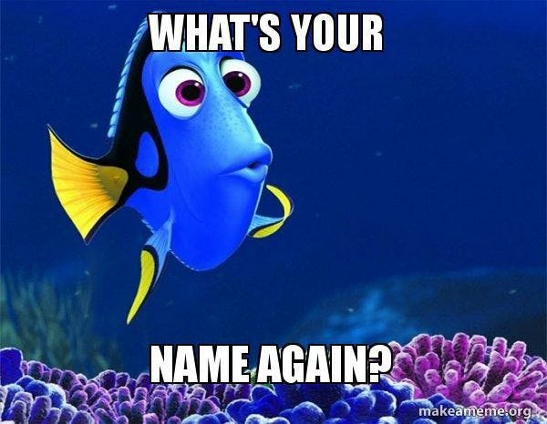
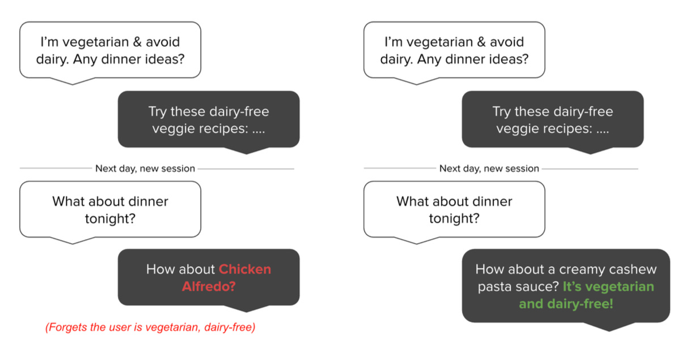
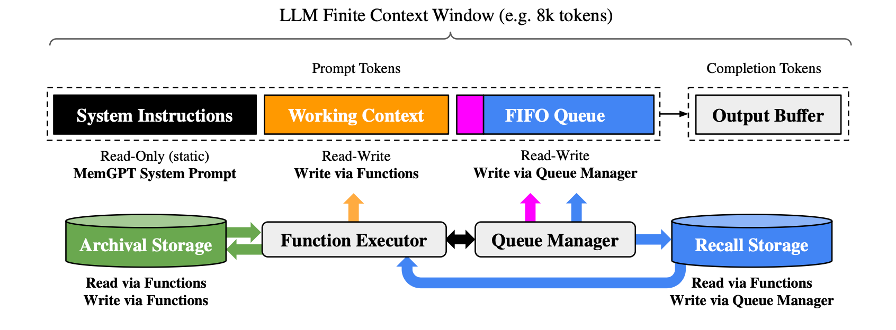
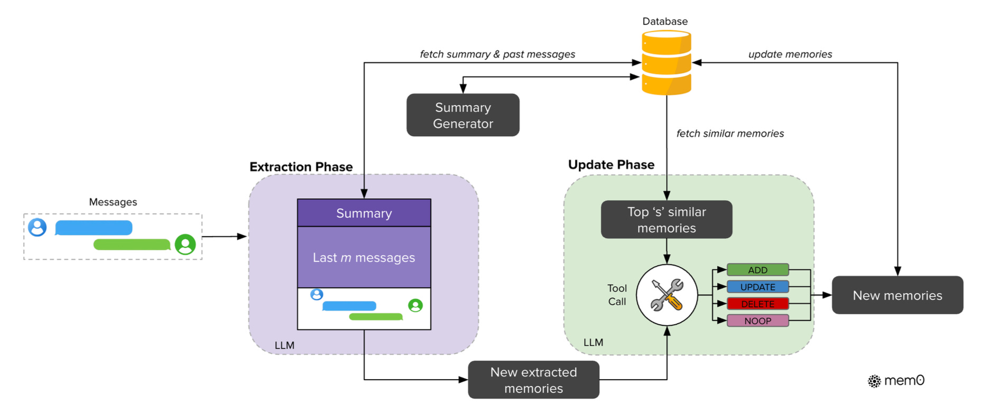

In my opinion, the next major advancement in Applied AI won’t come from larger models or more training data, but from agents that can actually learn from experience. For that to happen, a robust memory layer is absolutely essential. In this blog, we’ll delve into why agents need such a memory layer and explore the exciting possibilities this unlocks. But first, to set the context, let’s understand the limitations of current agents:
Context Window Bottleneck:
The most simplest mental model to understand Context window is:
Computer is to RAM as an LLM is to its context window.
Just as RAM determines how much data a computer can actively work with at any given moment, the context window limits how much information a large language model (LLM) can “see” and process at once.
It acts as AI’s active short-term memory. In more simple words - it’s the amount of information - text/audio/video, that AI can “look at” or consider at any given point of time when generating a response. While you chat with an AI, your conversation history, up to a certain limit, fits into this window.
The trouble is, this window is finite. Remember those “maximum limit reached” alerts in Claude or ChatGPT, well we are talking about exactly that! While it’s true that these windows have been expanding (Gemini models having 10M context length), they are still fundamentally limited. This poses a huge challenge for:
→ Extended Conversations - Chats that go on for days, weeks, or months will inevitably exceed the window size.
→ Complex Document Analysis - Trying to understand or summarize very long documents, like a detailed research paper or a lengthy legal contract, becomes problematic if the whole thing doesn’t fit.
→ Long-Term Tasks - Any project or goal that requires consistent input and understanding over a long period is hampered if the AI keeps forgetting earlier stages.
Why Can’t We Just Have Infinite Context?
A fair question! The technical reason, as I understand it, is largely tied to the underlying transformer architecture that powers many of these LLMs. The self-attention mechanism, which allows the model to weigh the importance of different parts of the input, generally has a computational and memory cost that increases quadratically with the length of the input sequence. Simply put, making the context window vastly larger makes the AI much, much slower and more expensive to run. While there’s ongoing research into more efficient architectures, just scaling up the current approach indefinitely isn’t practical.
“Lost in the Middle”: Even Big Windows Have Blind Spots
Even if we had incredibly long context windows, there’s another curious problem: LLMs don’t always use all the information within their context window equally well. Research, like the paper Lost in the Middle: How Language Models Use Long Contexts has shown a fascinating U-shaped performance curve. This means:
Models are often best at recalling and using information that appears at the very beginning of their input context (primacy bias).
They are also quite good with information at the very end of the context (recency bias).
However, performance can significantly degrade when they need to access and use information located somewhere in the middle of a long context.
Imagine feeding an AI 20 documents to answer a question, and the key document is the 10th one. The AI might struggle to find or correctly use that key document more than if it were the 1st or the 20th. In some cases, performance when information is in the middle can be worse than if the AI had no documents at all and was just relying on its pre-trained knowledge! This phenomenon is seen even in models specifically designed for long contexts.

The consequence of these limitations is that many AI agents today are essentially stateless. Each interaction is largely isolated, leading to a lack of true personalization, repeated questions, and inconsistent behavior. It’s like having a brilliant personal assistant who, unfortunately, gets their memory wiped clean every morning.
Defining “Memory” in AI: More Than Just Recent Chat History
When I talk about building AI agents with memory, I’m envisioning something far more sophisticated than just extending the context window. I’m talking about the AI’s capacity to retain, recall, and utilize relevant information across extended periods, diverse tasks, and numerous interactions. This is what allows an AI to transition from being a stateless tool to a stateful companion – one that truly learns and evolves alongside its user.
I think it’s helpful to consider different types of memory, drawing inspiration from human cognition, which some AI memory systems are starting to model:
Short-Term/Working Memory: This is the AI’s immediate “scratchpad,” analogous to the current context window. It holds what’s actively being processed.
Long-Term Memory: This is the persistent store of information. We can break this down further:
Episodic Memory: Memories of specific events or interactions. For an AI, this would mean remembering past conversations with you, the specific advice it gave, or the tasks you worked on together.
Semantic Memory: General knowledge and facts. This includes the AI’s vast pre-trained knowledge, but also, crucially, facts it learns specifically about you (your preferences, goals, style) or about a particular domain you’re working in.
Procedural Memory: Knowledge of how to do things. For an AI, this could be remembering a multi-step process you often use, or learning the best way to present information to you.
I have a strong opinion here. The Dotcom era Dotcom era enabled businesses to move online - and Apps emerged, I think AI is going to bring hyper-personalization to these apps. And for that to happen this much depth of memory so crucial. Moreover, Agent memory is going to play very important role in maintaining coherence and consistency in its interactions. It will enable an agent to Learn and adapt from past successes and failures.
Another challenge - LLMs lack focus!
Beyond the context window size and the “lost in the middle” problem, there’s another tricky aspect: distractibility. I think this is a crucial point – it’s not just about how much the AI can see, but how clearly it can see it. If the important details are surrounded by noise, the AI can get sidetracked.
The paper Large Language Models Can Be Easily Distracted by Irrelevant Context really drives this home. They created a special dataset called Grade-School Math with Irrelevant Context (GSM-IC) where math problems were intentionally mixed with useless information. What they found was that the performance of cutting-edge LLMs dropped dramatically when this irrelevant information was present. Even if all the necessary information is within the context window, adding just one irrelevant sentence could throw the model off. This tells me that even with larger context windows, we still need to be smart about how information is presented and processed.
The consequence of all these limitations – finite windows and “lost in the middle” effects – is that many AI agents today are essentially stateless. This is a really important concept, so let’s dive into it.
Stateless Agents
A stateless AI, in simple terms, is an AI that treats (almost) every interaction as a brand new one. It doesn’t have a persistent memory of your past conversations, preferences, or history beyond what fits in its immediate, fleeting context window.
Think about these scenarios, which I’m sure many of us have experienced:
→ The “Who Are You Again?” Syndrome: You’re in a long work session with an AI, perhaps coding or drafting a document. You’ve already told it your project name, your specific requirements, and your preferred style. Half an hour later, you ask it a follow-up question, and it responds as if it has no idea what project you’re even talking about.
→ Groundhog Day Problem-Solving: You’re working through a multi-step problem with an AI. It helps you with step 1. When you move to step 2, it seems to have forgotten the conclusions or data from step 1, forcing you to re-explain or re-feed information.
→ The Dietary Déjà Vu: You tell your AI assistant, “I’m a vegetarian.” It acknowledges this. The next day, you ask for dinner ideas, and it enthusiastically suggests a steakhouse. The “Mem0” paper has a great illustration of this exact problem (Figure 1 in their paper). Frustrating, right? That’s a stateless agent forgetting a critical piece of information once it falls out of the immediate context.
This statelessness is the arch-nemesis of hyper-personalization. It leads to inefficient interactions, repeated explanations, and a feeling that the AI, despite its power, doesn’t really “get” you or your ongoing needs. It’s like having that brilliant assistant I mentioned earlier, but one who gets their memory wiped clean every single morning.

Stateful Agents
Now, imagine the opposite: a stateful AI agent. This is an AI designed with a memory system that allows it to maintain a persistent, evolving understanding of you, your interactions, your preferences, and the facts relevant to your shared tasks, across multiple sessions and over long periods.
This isn’t just about remembering your name; it’s about building a continuous thread of understanding.
What could a truly stateful agent do?
Remember Your Preferences, Proactively: It wouldn’t just avoid suggesting steak after you say you’re vegetarian; it might proactively say, “Since you’re vegetarian, how about this new pasta dish?” or “I found some great vegetarian recipes that align with your goal of eating healthier, which you mentioned last week.”
Recall Your Work Context: When you resume a coding project, it would remember your preferred coding style, the libraries you commonly use, the overall architecture of your project, and the specific problem you were trying to solve last time.
Build on Past Interactions: It could reference a discussion you had weeks ago, saying, “Remember when we were talking about marketing strategies for X? I found an article that expands on that idea.”
Learn Your Style: Over time, it would adapt to your communication style, the level of detail you prefer, and even your sense of humor, making interactions feel more natural and efficient.
Enable True Learning and Adaptation: A stateful agent can learn from its mistakes. If it gave you a suggestion that didn’t work out, it could store that “outcome” and avoid similar errors in the future. This is crucial for agents that need to perform complex tasks or make decisions.
This statefulness transforms an AI from a generic tool into a genuine assistant, a collaborator, or even a companion that grows and learns with you.
I believe the next wave of killer apps won’t just be smart; they’ll be smart about you. And the engine driving this hyper-personalization will be these advanced memory systems. Think about how this could transform the apps we use every day:
| Category | Stateless | Stateful (with Memory) |
|---|---|---|
| E-commerce & Shopping | You search for “running shoes” and get a generic list. Next week, it treats you like a new customer. | The AI remembers your shoe size, brand preference, and past purchases. When you search for “running gear,” it suggests compatible items like socks or running belts and might even recommend accessories in complementary colors to items you previously bought. |
| Productivity & Work | You ask your AI coding assistant to write a Python function. For the next request, it might use a completely different style, forgetting your preferences for comments or error handling. | The AI coding assistant remembers your common coding patterns (e.g., preference for async functions, using black for formatting) and provides suggestions that fit seamlessly into your existing codebase and personal style. |
| Learning & Education | An AI tutor gives you a lesson on fractions. The next day, it starts from scratch, unaware of the specific concepts you struggled with previously. | The AI tutor remembers you found a specific concept (e.g., improper fractions) tricky. It starts the next session with a recap of that point, offers a different explanation, or provides tailored practice problems before moving on. |
| Healthcare & Wellness | You ask for help to reduce stress, and the app provides a generic meditation exercise. | The AI remembers your specific stressors (e.g., work deadlines) and preferred calming activities (e.g., nature walks). It suggests a targeted 10-minute meditation for deadline pressure or recommends a short walk, making the advice highly relevant. |
| Personal Assistants | A chatbot that can answer questions but has no memory of you, your preferences, or your past interactions. | An AI that remembers your goals, important names, favorite music, and even your mood patterns. It can offer encouragement and make suggestions that are truly relevant because they are rooted in a shared, remembered history. |
Current Approaches for Agentic Memory layer
- MemGPT (now part of LettaAI)’s LlmOS-Inspired Approach: The MemGPT: Towards LLMs as Operating Systems paper introduces “virtual context management,” where the LLM itself acts like an operating system for its memory. It intelligently manages a hierarchical memory system, with a limited “main context” (like RAM) for active processing and a larger “external context” (like disk storage, including archival and recall storage) for long-term information. The LLM uses function calls to page data between these tiers, effectively giving it an extended memory to handle tasks like large document analysis and multi-session chats where context far exceeds its physical window

- Mem0’s Approach to Dynamic Memory: The Mem0: Building Production-Ready AI Agents with Scalable Long-Term Memory paper outlines a scalable, memory-centric architecture designed for real-world applications. Memo’s system dynamically extracts salient information from conversations in an extraction phase (using historical context like summaries and recent messages) and then, in an update phase, uses an LLM with tool-calling capabilities to evaluate these new “candidate memories” against existing ones, deciding whether to ADD, UPDATE, DELETE, or take NOOP (no operation) to maintain a coherent knowledge base.

The Human Element: Feeling Understood
There’s something deeply human about being remembered. When a friend recalls a small detail from a conversation months ago, it makes us feel valued and heard. I believe that as AI agents develop more sophisticated memory, our interactions with them will start to feel more meaningful.
It’s not about replacing human connection, of course. But for the tasks we delegate to AI, or the ways we use AI for support and companionship, memory will be key to building trust and fostering a sense of being genuinely understood. When an AI can consistently recall your context, preferences, and history, it reduces friction, saves you time, and makes the collaboration feel much more natural and effective.
A Note on the Research That Inspired This Post:
Throughout this piece, I’ve drawn inspiration and information from the work of many talented researchers and writers exploring the frontiers of AI memory. If you’re interested in digging deeper, here are some of the key resources I found particularly insightful:
For understanding the challenges with how LLMs use long contexts, the paper Lost in the Middle: How Language Models Use Long Contexts (Liu et al., 2023) is a must-read.
The concept of LLMs being easily sidetracked is well-explored in Large Language Models Can Be Easily Distracted by Irrelevant Context (Shi et al., 2023).
For an OS-inspired approach to memory management, check out “MemGPT: Towards LLMs as Operating Systems” (Packer et al., 2023).
The Mem0: Building Production-Ready AI Agents with Scalable Long-Term Memory paper (Chhikara et al., 2025) offers a look at a production-focused system with impressive results and graph-based memory.
The blogs from Letta (on RAG vs. Agent Memory, Memory Blocks, and Stateful Agents) and Mem0.ai (on Types of Memory, Making AI Companions Truly Personal, and Memory in Agents) provide excellent conceptual overviews and insights into building more personal AI.